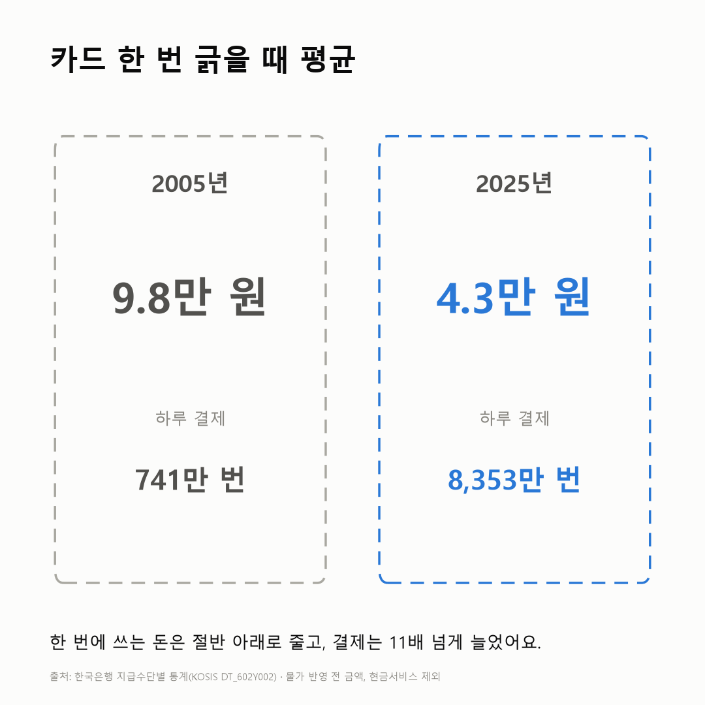
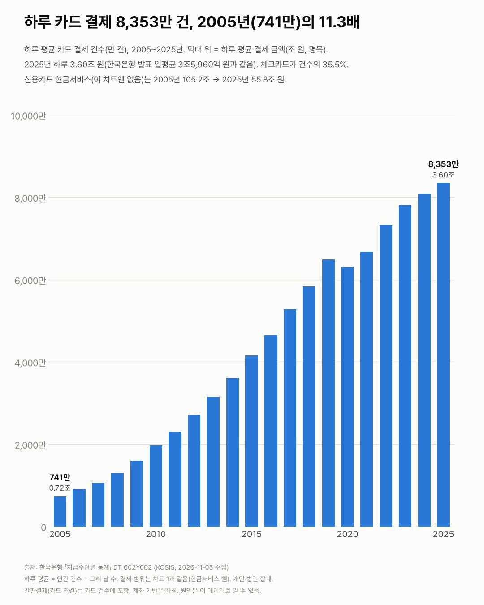

카드 한 번 긁을 때 쓰는 돈, 20년 전의 절반도 안 돼요
한 번에 크게 쓰던 카드가, 조금씩 자주 쓰는 카드가 됐어요.

3줄 요약
- 카드로 한 번 결제할 때 평균 금액은 2005년 9.8만 원, 2025년 4.3만 원이에요.
- 하루에 카드를 긁는 횟수는 741만 번에서 8,353만 번이 됐어요. 11배 넘게요.
- 신용카드로 물건 산 것만 봐도 한 번에 10.2만 원에서 5.4만 원으로 줄었어요.
단말기에 카드를 대요. 삑. 그 한 번에 오가는 돈이 가장 작았던 해는 2019년, 평균 3.9만 원이었어요. 그 뒤로 조금 올라 2025년엔 4.3만 원이 됐어요.
대신 훨씬 자주 긁어요. 하루 결제 횟수가 2005년 741만 번에서 2025년 8,353만 번이 됐어요. 계산기를 다시 두드려 봤어요. 11배가 넘더라고요. 하루에 결제하는 돈도 0.72조 원에서 3.60조 원으로 늘었어요.

물론 체크카드가 늘어난 것도 섞여 있어요. 한 번에 결제하는 돈이 적은 체크카드는 결제 건수의 7.2%(2005)에서 35.5%(2025)가 됐어요. 그래서 신용카드로 물건 산 것만 따로 떼어 봤어요. 10.2만 원에서 5.4만 원. 여기서도 줄었어요.
카드로 현금 빌리는 일도 줄었어요. 신용카드 현금서비스는 2005년 105.2조 원에서 2025년 55.8조 원이 됐어요.
하루 8,353만 번 가운데 몇 번이 예전 같으면 지폐로 냈을 돈일까요? 현금 결제는 이 표에 없어서 거기까진 셀 수 없었어요.
이 숫자는 어디서 왔나요
출처
기준일 2005~2025년이에요.
한국은행
- 지급수단별 통계KOSIS DT_602Y002원본 보기
연 2005~2025, 카드 종류별 건수(천 건)·금액(십억 원)
어떻게 셌나요
- 한국은행 지급수단별 통계의 카드 이용 건수와 금액이에요. 개인과 법인을 합친 값이에요.
- 여기서 결제는 신용카드로 물건·서비스를 산 것과 체크·직불·현금IC·선불카드 결제를 더한 거예요. 신용카드로 현금을 빌리는 현금서비스는 뺐어요.
- 한 번 결제할 때 금액(건당 금액)은 이용금액을 이용건수로 나눈 값이에요. 물가를 빼지 않은 그해 돈(명목)이에요.
- 하루 평균은 1년 값을 그해 날 수(윤년은 366일)로 나눈 값이에요.
한계 4가지
이 데이터로 말할 수 없는 것
- 건당 금액이 줄었다는 건 작은 결제를 카드로 더 많이 한다는 뜻일 수 있어요. 소비가 줄었다는 뜻은 아니에요. 명목이라 물가를 빼면 감소 폭은 더 커요.
- 카드에 연결된 간편결제는 카드 실적에 잡히지만 계좌 기반 결제(간편송금 등)는 빠져요. 현금 결제도 이 표엔 없어요.
- 개인·법인이 섞여 있어요. 사람 수 대신 결제 건수를 셌어요. 원인은 이 데이터로 알 수 없어요.
- 온라인 결제 흐름은 온라인쇼핑 글에서 다뤘어요.
새 글 나오면 받아 보기
피드 리더 앱에 이 사이트 주소를 한 번 넣어 두면, 새 글이 올라올 때 앱에 떠요. 가입이나 메일 주소는 필요 없어요.
받는 법 보기
- 피드 리더 앱을 하나 골라요. 새 글을 모아 보여 주는 앱이에요. 예를 들면 Feedly나 Inoreader가 있어요. 둘 다 무료고 웹·휴대폰에서 써요.
- 앱에서 '구독 추가'(+)를 누르고 아래 주소를 붙여 넣어요.
- 끝이에요. 새 글이 올라오면 앱 목록에 떠요.
https://protofu.github.io/opendata-insight/feed.xmlFeedly를 쓴다면 여기를 눌러 바로 추가할 수도 있어요.